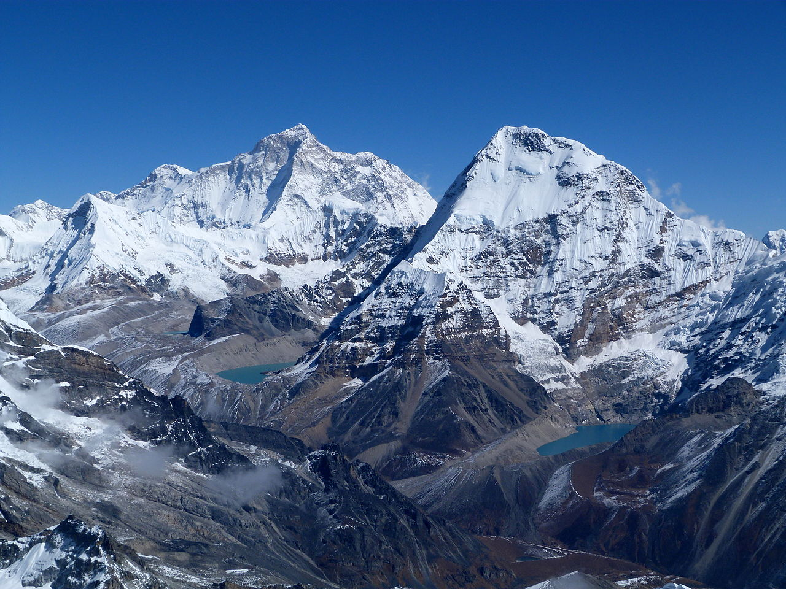

| Makalu |
|  |
The fifth highest mountain on the planet
-
Makalu has a height of 8485 m, it is located in the Mahalangur Himalayas 19 km southeast of Mount Everest, on the China–Nepal border.
-
Makalu is an isolated peak in the shape of a four-sided pyramid.
-
It is one of the most difficult mountains in the world to climb.
-
The mountain is notorious for its steep pitches and knife-edged ridges.